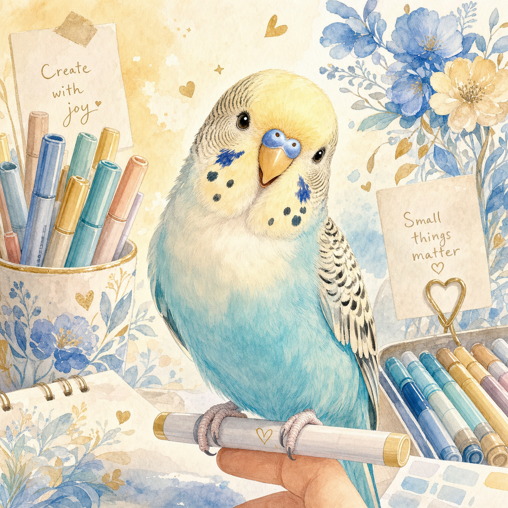
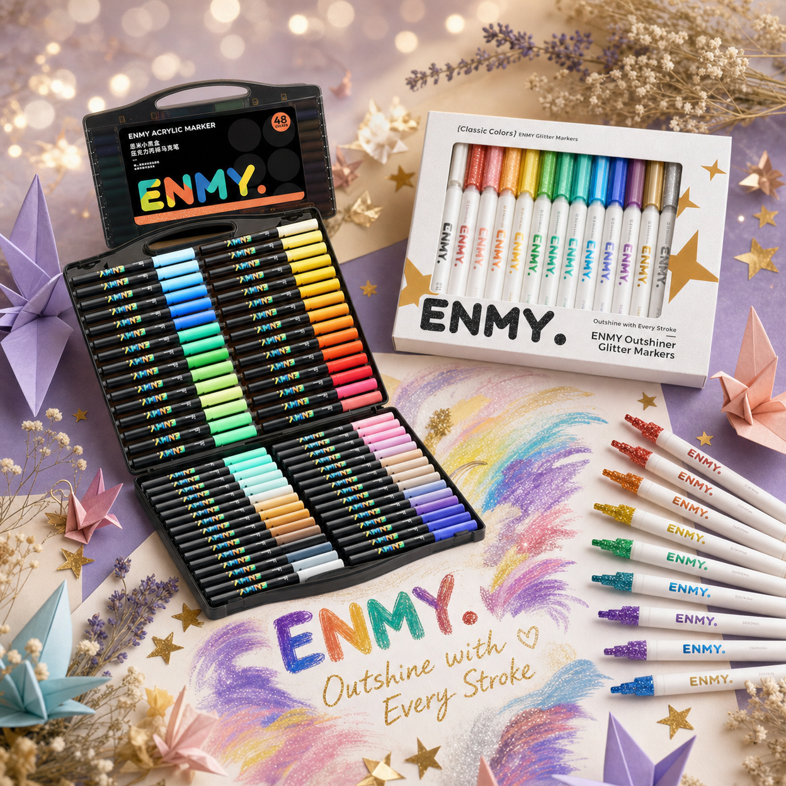

Chapter 01
一切，從那個陽光灑落的下午開始。
ENMY 的故事，始於一個再平凡不過的午後。
創辦人坐在窗邊，陽光透過薄薄的窗簾，將整個房間染成溫暖的金黃色。桌上散落著各式各樣的筆、紙張、色卡，還有一個翻開的素描本。
就在那個瞬間，指尖輕觸紙張，沙沙的聲音在寂靜中顯得格外清晰。那是一種與世界隔絕的美好——不需要解釋、不需要表演，只是純粹地，讓色彩在紙上自由流動。
Chapter 02
那是日常裡最治癒的背景音。

在 ENMY 的世界裡，有一位特別的夥伴——鳥寶貝。
牠不會說話，卻總是在最需要陪伴的時候，輕輕地拍動翅膀。那個細微的聲音，像是一首只屬於這個空間的輕柔樂曲，讓人的心慢慢沉靜下來。
我們相信，生活中的美好往往藏在這些微小的瞬間裡。一隻鳥的拍翅、一支筆在紙上滑過的聲音、窗外飄進來的微風——這些，都是 ENMY 想要守護的日常詩意。
Chapter 03
每一支筆，都是通往那個世界的鑰匙。
ENMY 的每一款產品，都承載著一個簡單而深刻的信念： 讓平凡的午後，蘸上微光與色彩。
從 ENMY Glitter Markers 的閃亮筆觸，到每一個精心設計的色號，我們希望每一位拿起這支筆的人，都能感受到那份「被允許做自己」的自由。
不需要是藝術家，不需要有完美的技巧。只需要一個安靜的角落、一張白紙，還有一支屬於你的 ENMY 筆——然後，讓故事自己流淌出來。

Our Values
我們相信，每一個人都值得擁有屬於自己的靜謐時光。
在喧囂的世界裡，我們守護那一方安靜的角落。讓每一個創作的瞬間，都成為與自己對話的珍貴時光。
每一支 ENMY 筆，都帶著閃亮的魔法。我們相信，讓色彩閃耀，就是讓生命閃耀。
不需要完美，只需要真實。ENMY 陪伴每一個勇敢做自己的靈魂，在紙上留下最純粹的印記。
Our Journey
起點
一個陽光午後，創辦人在窗邊拿起一支閃亮的筆，在素描本上畫下第一條閃光線條。ENMY 的種子，就此種下。
成長
從台灣出發，ENMY 的故事開始在全球各地流傳。日本、墨西哥、全球各地的創作者，都在 ENMY 的陪伴下，找到了屬於自己的靜謐時光。
擴展
我們相信，創作的喜悅沒有年齡限制。ENMY Kids 為孩子們打開色彩的大門；ENMY Art 則為每一位藝術探索者，提供更深邃的創作工具。
現在
ENMY 的故事還在繼續。每一位拿起我們筆的人，都是這個故事的共同作者。謝謝你，讓我們的世界更加閃亮。
The End is Just the Beginning
每一個平凡的午後，都可以成為你的 ENMY 時光。 拿起一支筆，讓色彩說話，讓靜謐治癒你。